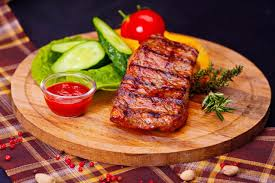

Receta de plato caliente
Homepage
Our Clients
About Us
Privacy policy
Terms and Conditions
Photo gallery
Contacts
Welcome to Receta de plato caliente
47 Platos de cuchara con verduras para mantener la línea en .
27 platos de cuchara, sanos y fáciles, que tienen cabida en tu .
Aprende nuevas recetas de platos calientes - Cocina facilísimo
Increíbles ideas de platos calientes - 21 recetas - Rebañando
Platos calientes | Cocina de La Chata
Platos calientes - 21 recetas caseras- Cookpad
25 recetas reconfortantes y sanas para entrar en calor los días .
Increíbles ideas de platos calientes - Descubre una colección completa de explicadas .
15 recetas de guisos caseros de cuchara | PequeRecetas
Platos calientes - Cincap
7 platos de cuchara perfectos para entrar en calor - HOLA!
Privacy policy
2021.06.26 11:31
<div class="mc_vtvc_th b_canvas"><div class="cico" style="width:234px;height:131px;"><div class="rms_iac" style="height:131px;line-height:131px;width:234px;" data-height="131" data-width="234" data-alt="Sopa de tortellini a la parmesana | Ideal para festivos" data-role="presentation" data-class="rms_img" data-src="https://tse3.mm.bing.net/th?id=OVP.3C5JOAZZMV2xY6KOtneeswEsDh" frameborder="0" allow="accelerometer; autoplay; encrypted-media; gyroscope; picture-in-picture" allowfullscreen>

Vivamus fermentum nibh
© Receta de plato caliente. All rights reserved. | Photos by Fotogrph
Twitter
Pinterest
Google+
Pinterest